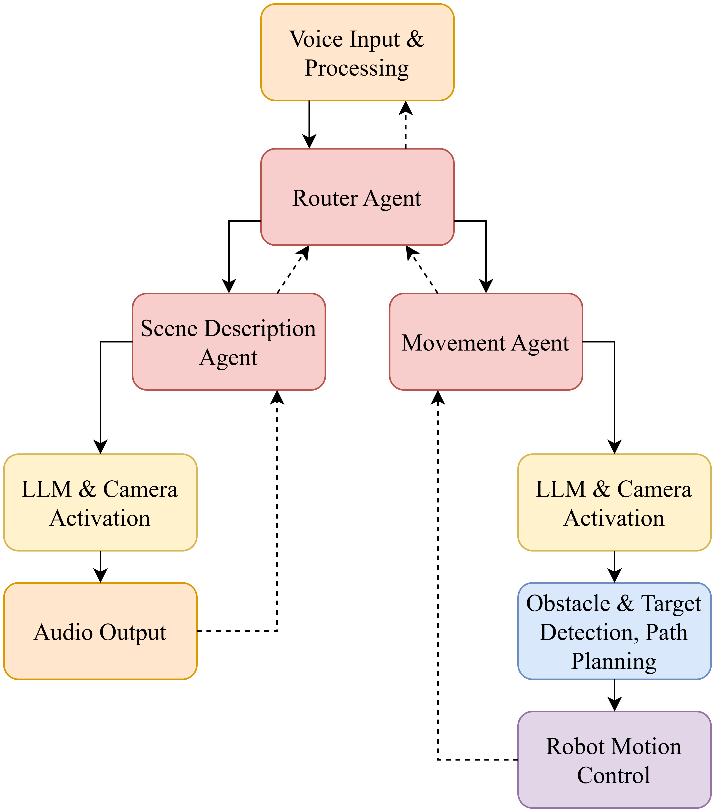
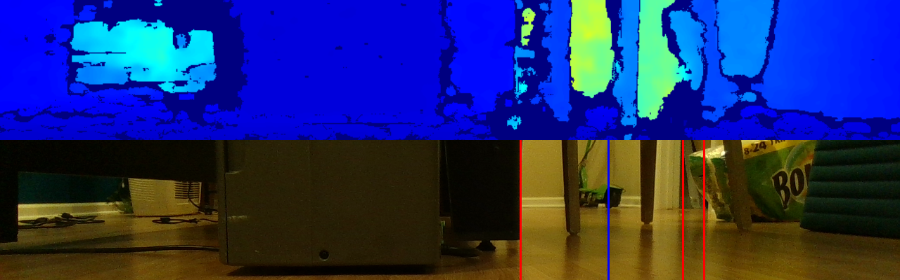
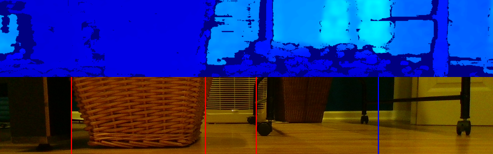
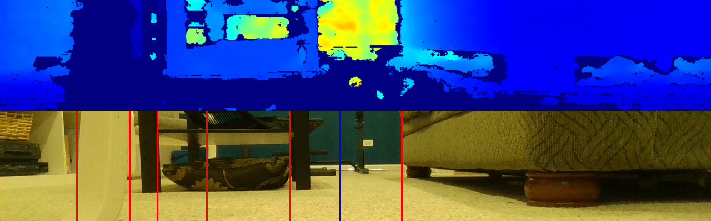

Abstract
As the demand for accessible and sustainable solutions in human care grows, artificial intelligence (AI) and robotics are increasingly being explored for their potential to assist individuals with disabilities. Recently, there has been a growing research interest in robots that can enhance autonomy and safety in daily activities, bridging gaps in mobility and spatial awareness. In this paper, I introduce a novel robotic pipeline that assists in the navigation of indoor spaces for the visually impaired. The system leverages cloud-based large language models (LLMs) in an agentic workflow to classify vocal input from the user and hold custom commands and conversations with intuitive and rich output. A combination of on-device computer vision and cloud models are used to spatially categorize environments, and innovative path planning and motion profiling algorithms are used to navigate indoor spaces efficiently. The system uses novel applications of LLMs for quantitative robotic analysis for enhanced navigation and interaction throughout the pipeline. The mobile robot can be given a variety of voice commands to move through spaces while avoiding obstacles, and can describe such obstacles to the user, warning them about any hazards in their path. In a 75-participant user study, users gave high ratings for the effectiveness of the scene description and the ease of use of the robot, and emphasized the positive impact of the audio feedback capability on daily life as well as the smoothness of custom verbal interaction with the robot. This underscores the substantial potential of robotics powered by AI for assisting the visually impaired in unfamiliar indoor environments.
Method Pipeline
The agent workflow has high levels of user interaction and input customization. Cloud-based actions are yellow, on-device actions are blue, audio-based actions are orange, vision-based actions are green, and movement actions are purple.

Demo Videos
Note: some parts of demo videos were sped up to improve viewing quality.
Robot describing the living room, turning, and moving ahead.
Robot avoiding obstacles and identifying trip hazards on the floor.
Robot describing scene details and alerting the user when the path is blocked.
Photos

The INAVI robot with labeled components.
Below are snapshots of the INAVI robot's camera feed, with depth vision on the top and real vision on the bottom. Detected obstacles are shown with red vertical lines and the safest location is shown with a blue vertical line.


